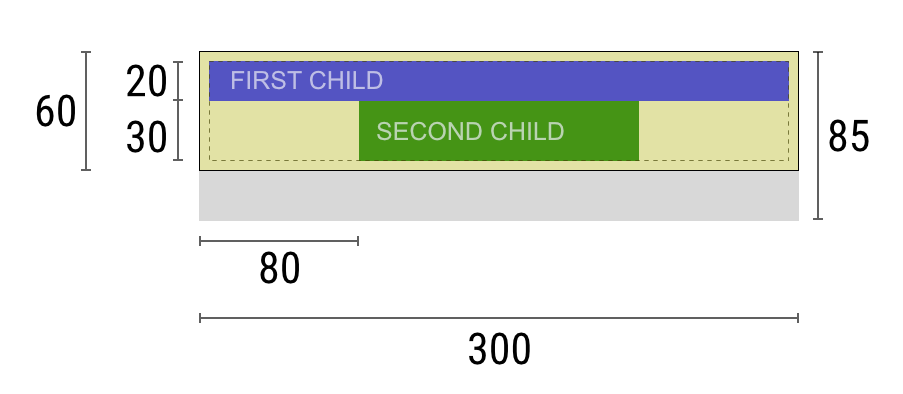
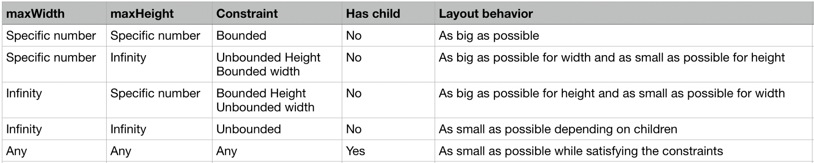

Flutter renders widgets in a tree structure, in the above tree, each circle represents each widget. To render each widget, flutter first goes down the tree from the root widget, and then goes back when traverse finished.
While going down, parent widget passes its constraints to the child, and then, child widget passes its constraints to its child too, till flutter reach the leaf widgets(no child anymore).
Then flutter will go back up, from leaf widgets, they calculate its size by constraints, and then return the size of the widget back to parent widget, till flutter reach the root widget.
Finally, flutter knows the size of all widgets, it places widgets from root to leaf. When a parent node gets the size of its children node, it can simply place each child one by one. After placing a child, it can determine position of next child using the size of the previous child and adding that many pixel offset.
A constraint is just a property specifying the size or space a widget can take up. A constraint is just a set of 4 doubles: a minimum and maximum width, and a minimum and maximum height. A widget gets its own constraints from its parent.
In Flutter you need to remember the following rules -
For example, if a composed widget contains a column with some padding, and wants to lay out its two children as follows:
The negotiation goes something like this:
Widget : “Hey parent, what are my constraints?”Parent : “You must be from 90 to 300 pixels wide, and 30 to 85 tall.”Widget : “Hmmm, since I want to have 5 pixels of padding, then my children can have at most 290 pixels of width and 75 pixels of height.”Widget : “Hey first child, You must be from 0 to 290 pixels wide, and 0 to 75 tall."First child: “OK, then I wish to be 290 pixels wide, and 20 pixels tall.”Widget: “Hmmm, since I want to put my second child below the first one, this leaves only 55 pixels of height for my second child.”Widget : “Hey second child, You must be from 0 to 290 wide, and 0 to 55 tall.”Second child : “OK, I wish to be 140 pixels wide, and 30 pixels tall.”Widget : “Very well. My first child has position x: 5 and y: 5, and my second child has x: 80 and y: 25.”Widget : “Hey parent, I’ve decided that my size is going to be 300 pixels wide, and 60 pixels tall.”As a result of the layout rule mentioned above, Flutter’s layout engine has a few important limitations:
It’s very common to hear that some constraint is “tight” or “loose”, so it’s worth knowing what that means.
A tight constraint offers a single possibility, an exact size. In other words, a tight constraint has its maximum width equal to its minimum width; and has its maximum height equal to its minimum height. In flutter the root widget is given the tight constraints which is the same as the screen size. That's why the root widget always fills up the screen.
A loose constraint, on the other hand, sets the maximum width and height, but lets the widget be as small as it wants. In other words, a loose constraint has a minimum width and height both equal to zero. So in loose constraints the minimum height and minimum width is always 0. In the Parent-Child widget conversion above you can see the child widgets given loose constraints.
An unbounded widget is a widget which has either the max width or max height set to Infinity.
A bounded widget have some definite value for its max width and max height property. A bounded widget can have a tight width, tight height or both. A widget have tight width if it have same value for both min Width and max Width property. Same analogy goes for tight height.
Bounded widgets honor the constraints and try to be as big as possible. In case of unbounded widget, we have a special case of Infinity. A widget can not try to be as big as Infinity, it is not possible. A box that tries to be as big as possible won’t function usefully when given an unbounded constraint and, in debug mode, such a combination throws an exception that points to this file.
We use unbounded constraint where we would need scrolling like ListView, ScrollView. In unbounded constraint, a widget tries to be as big as possible in the bounded parameter and as small as possible in the unbounded parameter.
Flex boxes themselves (Row and Column) behave differently based on whether they are in bounded constraints or unbounded constraints in their given direction.
In bounded constraints, they try to be as big as possible in that direction.
In unbounded constraints, they try to fit their children in that direction. In this case, you cannot set flex on the children to anything other than 0 (the default). In the widget library, this means that you cannot use Expanded when the flex box is inside another flex box or inside a scrollable. If you do, you’ll get an exception message pointing you at this document.
In the cross direction, for example, in the width for Column (vertical flex) or in the height for Row (horizontal flex), they must never be unbounded, otherwise they would not be able to reasonably align their children.
Center( child: Container(width: 100, height: 100, color: Colors.red) )
The screen forces the Center to be exactly the same size as the screen, so the Center fills the screen.
The Center tells the Container that it can be any size it wants, but not bigger than the screen. The Container wants to be 100 x 100 size, and this size honors the constraints. So the size will be 100 x 100.
Align( alignment: Alignment.bottomRight, child: Container(width: 100, height: 100, color: Colors.red), )
Center(
child: Container(
color: Colors.red,
width: double.infinity,
height: double.infinity,
)
)
The screen forces the Center to be exactly the same size as the screen, so the Center fills the screen.
The Center tells the Container that it can be any size it wants, but not bigger than the screen. The Container wants to be of infinite size, but since it can’t be bigger than the screen, it just fills the screen.
Center(child: Container(color: Colors.red))
The screen forces the Center to be exactly the same size as the screen, so the Center fills the screen.
The Center tells the Container that it can be any size it wants, but not bigger than the screen. Since the Container has no child and no fixed size, it decides it wants to be as big as possible, so it fills the whole screen.
But why does the Container decide that? Simply because that’s a design decision by those who created the Container widget. It could have been created differently, and you have to read the Container documentation to understand how it behaves, depending on the circumstances.
Center(
child: Container(
color: Colors.red,
child: Container(color: Colors.green, width: 30, height: 30),
)
)
The Center tells the red Container that it can be any size it wants, but not bigger than the screen. Since the red Container has no size but has a child, it decides it wants to be the same size as its child.
The red Container tells its child that it can be any size it wants, but not bigger than the screen.
The child is a green Container that wants to be *30 × 30*. Given that the red Container sizes itself to the size of its child, it is also *30 × 30*. The red color isn’t visible because the green Container entirely covers the red Container.